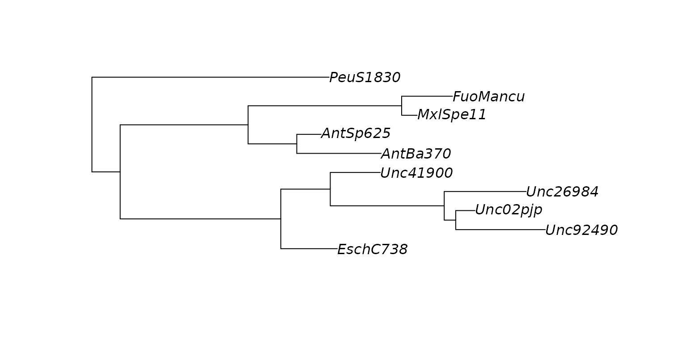

Parse counts, metadata, taxonomy, and phylogeny from a BIOM file.
Source:R/read_biom.r
read_biom.RdParse counts, metadata, taxonomy, and phylogeny from a BIOM file.
Arguments
- src
Input data as either a file path, URL, or JSON string. BIOM files can be formatted according to version 1.0 (JSON) or 2.1 (HDF5) specifications, or as classical tabular format. URLs must begin with
http://,https://,ftp://, orftps://. JSON files must have{as their first character. Compressed (gzip or bzip2) BIOM files are also supported. NOTE: to read HDF5 formatted BIOM files, the BioConductor R packagerhdf5must be installed.- ...
Properties to set in the new rbiom object, for example,
metadata,id,comment, ortree.
Value
An rbiom object.
Examples
library(rbiom)
infile <- system.file("extdata", "hmp50.bz2", package = "rbiom")
biom <- read_biom(infile)
print(biom)
#>
#> ══ Human Microbiome Project - 50 Sample Demo ═══════════════
#>
#> Oral, nasal, vaginal, and fecal samples from a diverse set
#> of healthy volunteers. Source: Human Microbiome Project
#> (<https://hmpdacc.org>).
#>
#> 50 Samples: HMP01, HMP02, HMP03, ..., and HMP50
#> 490 OTUs: Unc01yki, Unc53100, LtbAci52, ...
#> 7 Ranks: .otu, Kingdom, Phylum, ..., and Genus
#> 5 Fields: .sample, Age, BMI, Body Site, and Sex
#> Tree: <present>
#>
#> ── 182 - 22k reads/sample ──────────────────── 2023-09-22 ──
#>
# Taxa Abundances
biom$counts[1:4,1:10] %>% as.matrix()
#> HMP01 HMP02 HMP03 HMP04 HMP05 HMP06 HMP07 HMP08 HMP09 HMP10
#> Unc01yki 0 0 0 0 0 0 0 0 0 2
#> Unc53100 1083 543 301 223 2672 748 2436 321 57 28
#> LtbAci52 0 0 0 0 0 0 0 0 0 0
#> CnbTube3 0 0 0 0 0 0 0 0 0 659
biom$taxonomy %>% head()
#> # A tibble: 6 × 7
#> .otu Kingdom Phylum Class Order Family Genus
#> <chr> <fct> <fct> <fct> <fct> <fct> <fct>
#> 1 Unc01yki Bacteria Firmicutes Bacilli Lactobacillales Lacto… Lact…
#> 2 Unc53100 Bacteria Firmicutes Bacilli Lactobacillales Strep… Stre…
#> 3 LtbAci52 Bacteria Firmicutes Bacilli Lactobacillales Lacto… Lact…
#> 4 CnbTube3 Bacteria Actinobacteria Actinobacteria Corynebacteriales Coryn… Cory…
#> 5 Unc02qsf Bacteria Firmicutes Bacilli Bacillales Staph… Stap…
#> 6 PpbAcne6 Bacteria Actinobacteria Actinobacteria Propionibacteria… Propi… Prop…
# Metadata
biom$metadata %>% head()
#> # A tibble: 6 × 5
#> .sample Age BMI `Body Site` Sex
#> <chr> <dbl> <dbl> <fct> <fct>
#> 1 HMP01 22 20 Buccal mucosa Female
#> 2 HMP02 24 23 Buccal mucosa Male
#> 3 HMP03 28 26 Saliva Male
#> 4 HMP04 25 23 Saliva Male
#> 5 HMP05 27 24 Buccal mucosa Female
#> 6 HMP06 32 25 Saliva Male
table(biom$metadata$Sex, biom$metadata$`Body Site`)
#>
#> Anterior nares Buccal mucosa Mid vagina Saliva Stool
#> Female 5 5 10 5 5
#> Male 5 5 0 5 5
sprintf("Mean age: %.1f", mean(biom$metadata$Age))
#> [1] "Mean age: 27.8"
# Phylogenetic tree
biom$tree %>%
tree_subset(1:10) %>%
plot()
